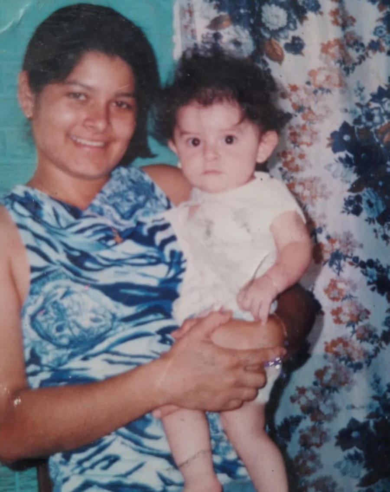
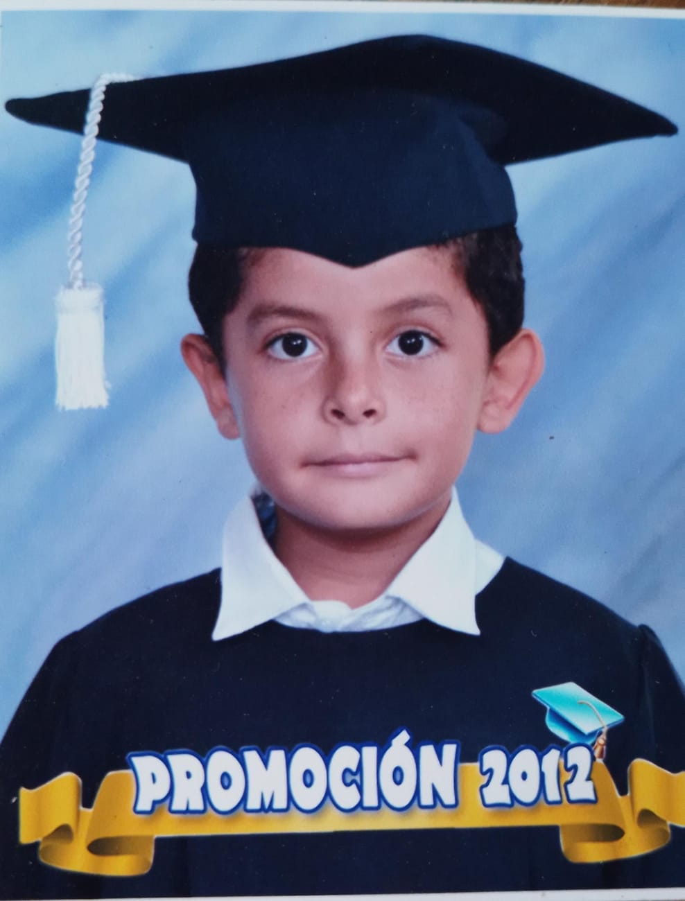
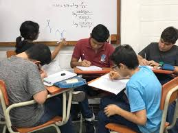
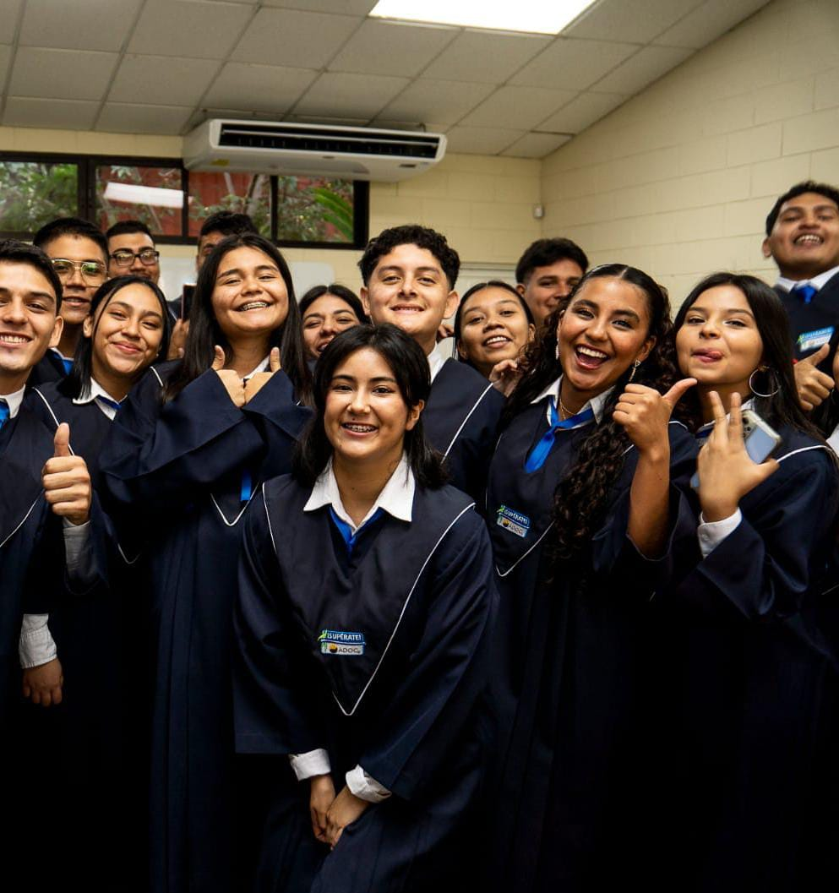
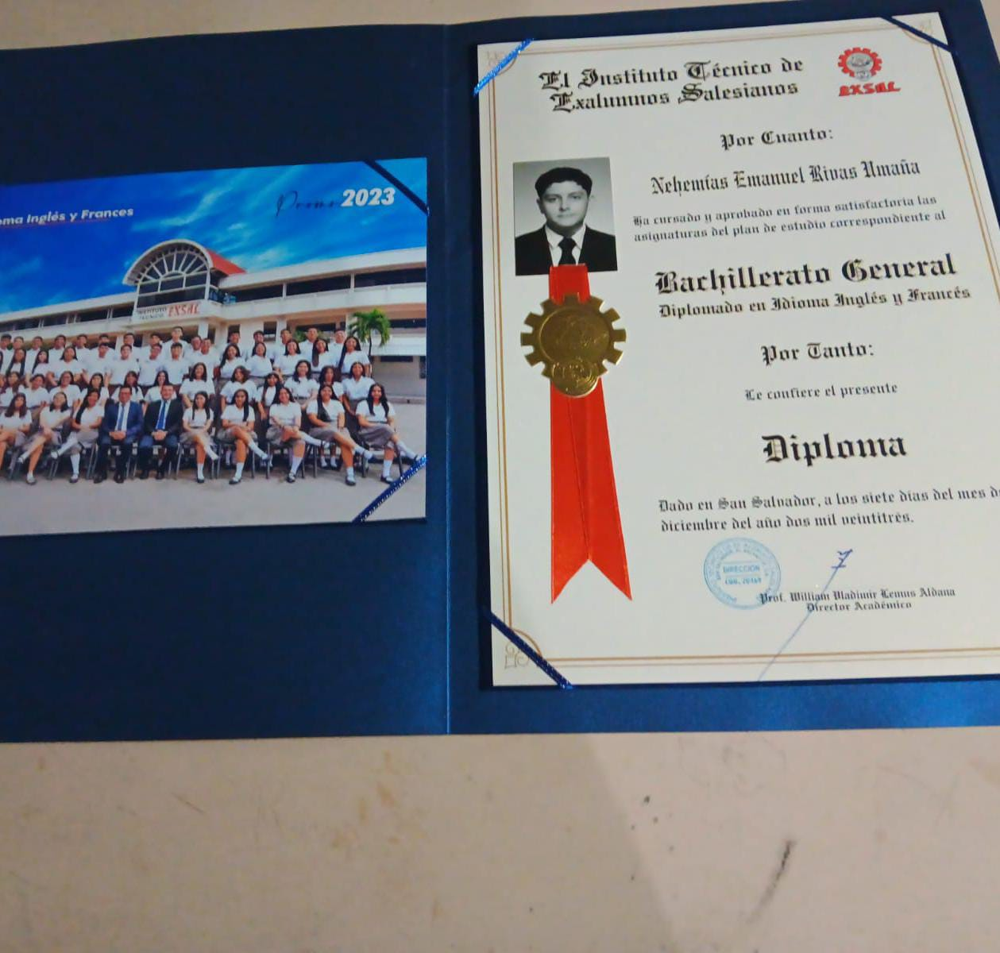
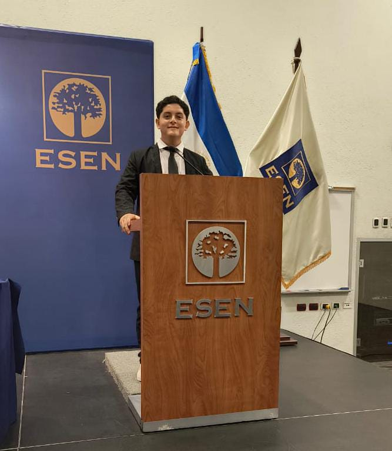
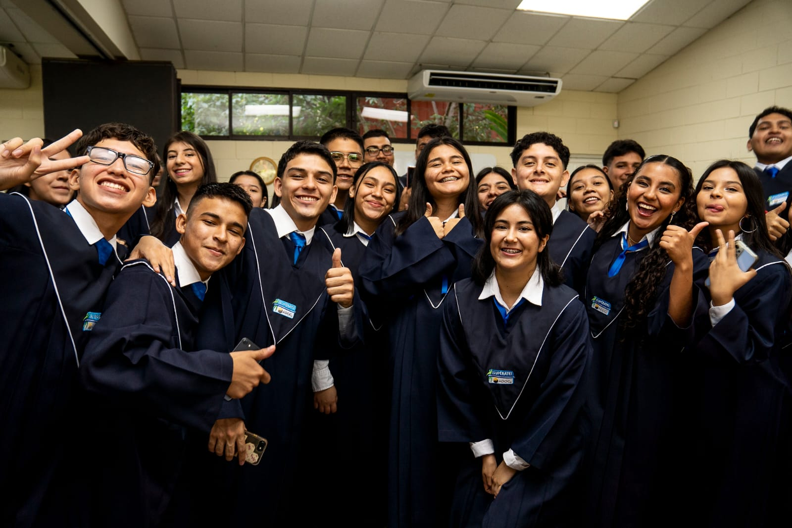

Contexto
Nehemías Emanuel Rivas Umaña nació el 2 de agosto de 2005 en el Hospital Amatepec en Soyapango y creció en Altavista, Ilopango. Su padre, Moris Enrique, y su madre, Marta Evelyn, introdujeron a Nehemías a la familia Rivas Umaña. Nehemías es el menor entre cuatro hermanos, Yolanda, Ester y Esmeralda son sus hermanas. Actualmente, él es estudiante de Ingeniería de Software y Negocios Digitales en la Escuela Superior de Economía y Negocios (ESEN). Se centra en desarrollar habilidades técnicas en tecnología y competencias interpersonales que le permitan crecer personal y profesionalmente.
Infancia
Crecer en una familia de valores marcó profundamente su formación: desde pequeño vivió en un ambiente sano, amoroso y tranquilo, asistiendo con su familia a la iglesia con regularidad. Esa educación en valores y el contacto constante con las Escrituras le brindaron fundamentos éticos —valentía, amor y compromiso— que hoy condicionan sus decisiones. Aunque sus padres no tuvieron oportunidades formales para estudiar y la economía familiar fue limitada, su convicción de que la educación es la herramienta para mejorar la vida le permitió recibir apoyo y motivación para seguir adelante.
Estudios
Desde muy joven mostró curiosidad por aprender. Durante su educación básica (2011–2021) fue
construyendo una base sólida de conocimientos y hábitos de estudio; esos años le dieron la
disciplina y la rutina necesarias para aprovechar oportunidades posteriores.
En paralelo a
la
escuela, su interés por la tecnología comenzó como pequeños experimentos y cursos cortos que
pronto se convirtieron en una dirección clara. Aunque al inicio, se sintió abandonado en un lugar extraño su primer día dd clase, luego se dió cuenta que era un lugar seguro donde hizo muchos amigos.

A partir de 2019, mientras aún cursaba la educación básica, participó en el Programa Jóvenes Talento (2019–2021). Ese programa fue una primera puerta: le ofreció formación complementaria (matemáticas y ciencias naturales avanzadas), exposición a nuevos enfoques y la confianza para proyectarse más allá del aula regular. La coincidencia temporal entre el cierre de la educación básica y las actividades del PJT en 2021 marcó un punto de inflexión; en ese mismo año se empezaron a manifestar opciones más técnicas y formales para su futuro.

En 2021 se abrió otra puerta decisiva: el ingreso al Programa ¡Supérate! (2021–2023). Allí recibió formación en inglés, computación y valores. El programa no solo le dio habilidades técnicas concretas, sino también una mentalidad de excelencia y disciplina. Fue en ese entorno donde Nehemías descubrió con más claridad su pasión por la programación: los talleres, la práctica constante y el acompañamiento lo llevaron de la curiosidad a la elección consciente de una profesión relacionada con la tecnología.

El paso al bachillerato en el Instituto Técnico de Exalumnos Salesianos (2022–2023) representó la apertura de una puerta más —esta vez marcada por una beca completa— que validó su esfuerzo y le permitió concentrarse en una formación técnica más rigurosa. El bachillerato complementó lo aprendido en los programas anteriores con proyectos, trabajo en equipo y exigencia académica; además, fortaleció su expediente y sus posibilidades para acceder a estudios superiores.

En 2024 inició su etapa universitaria en ESEN, gracias a una beca que le permite no preocuparse por los costos de estudio, alimentación o alojamiento en la carrera Ingeniería de Software y Negocios Digitales. La entrada a la universidad fue la consecuencia lógica de las puertas previas: la base disciplinaria, las competencias en inglés y computación, la beca y la claridad vocacional. En la actualidad, cada curso, proyecto y actividad extracurricular abre nuevas posibilidades —desde colaborar en proyectos prácticos hasta construir una red profesional— y Nehemías se prepara para convertir ese aprendizaje en experiencia práctica.

Actualidad
En la actualidad, Nehemías está inmerso en un proceso de aprendizaje intenso: cada curso, laboratorio y actividad extracurricular en ESEN le aporta herramientas concretas (programación, lógica, modelos de negocio) y le revela nuevas áreas de interés, como el análisis de datos y el diseño de sistemas. Ese aprendizaje no es solo teórico: busca oportunidades para practicar —mini-proyectos, colaboraciones con compañeros y retos prácticos— porque entiende que la experiencia y la ejecución son lo que convierte el conocimiento en producto.
Paralelamente, está trabajando en ampliar su red de relaciones profesionales y personales. Participar en eventos, formar parte de grupos de estudio y colaborar en proyectos le permite conocer mentores, colegas y futuros socios; cada nuevo contacto es otra puerta que puede abrir oportunidades de prácticas, empleo o emprendimiento.
Además, su motivación incluye un propósito personal: usar lo que aprende para mejorar la realidad de su familia. Sus decisiones académicas y su disciplina diaria están orientadas a consolidar una base económica y profesional que beneficie a quienes lo apoyaron. La constancia, la organización y la fe siguen siendo motores que mantienen su enfoque y generan nuevas oportunidades de crecimiento.

Visión a futuro
A mediano plazo, Nehemías aspira a desarrollarse profesionalmente en el ámbito del software, especializándose en la creación de soluciones tecnológicas que aporten valor real: aplicaciones, sistemas integrados y productos digitales que resuelvan problemas concretos en la comunidad o en empresas.
Quiere acumular experiencia práctica —trabajos, prácticas, proyectos freelance o un emprendimiento propio— y, al mismo tiempo, seguir capacitándose (cursos especializados, bootcamps, certificaciones). Además, le apasiona la idea de impactar a jóvenes con un proyecto especifico para ayudar a jóvenes a desarrollar habilidades de crecimiento personal, liderazgo